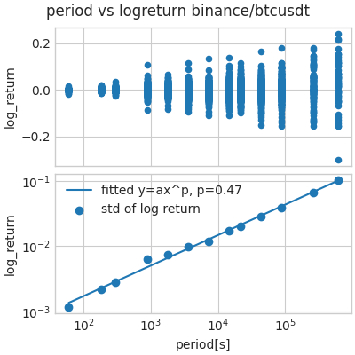
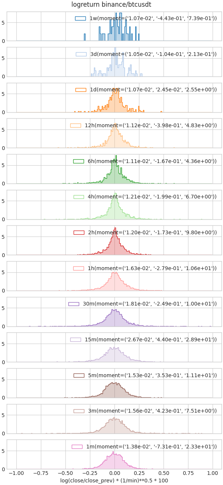

暗号通貨BTCの価格の挙動に足の長さ(1分足、1時足、1日足、1週足等)による違いがあるのかを観察しました。 株価では価格の対数リターンが正規分布に近いということは知られており、 暗号通貨でも同様に対数リターンの分布を調べてみることにしました。
暗号通貨BTCのUSDT建ての対数リターンの分布を、 直近1年のデータで複数の時間足スケール(1min, 3min,…,1h,…1d,…,1week)に対して確認しました。
対数リターンはランダムウォークか
対数リターンがランダムウォークの場合、 分布の標準偏差は測定時間間隔$t$の1/2乗のスケール則が成り立ちます。
実際の価格の分布はランダムウォークに従っているのでしょうか。 以下に複数の時間足スケールにおける価格のリターンの分布を示します。 
上図・下図ともには横軸:時間足スケール(対数表示)、縦軸:対数リターンとなっています。 上図は各時間足スケールにおける対数リターンの散布図、 下図は各時間足スケールにおける対数リターンの標準偏差です。 下図は両対数プロットになっており、$y=ax^p$に対してフィッティングした線も載せています。 フィッティング結果$p=0.47$は0.5に近い値であり、 ある程度ランダムウォークにに近い挙動を取ることが確認できます。 また、時間間隔によってフィッティング線の上または下にでており、 対数リターンの分散の大きな/小さな時間間隔があることが確認できます。
各時間間隔における2,3,4次モーメント量の確認
各時間間隔(1min, 3min,…,1h,…1d,…,1week)における対数リターンの分布をヒストグラムで表示します。
そのまま表示すると時間が長いほど横に広い分布になるだけなので、 縮尺が同じになるように調節します。 縮尺としてランダムウォーク仮設に従い、対数リターンに$(1/t)^{1/2}$をかけます。 この仮設がある程度正しそうなことは、前節で確かめています。
また、図中のmoment=()の中身は2,3,4次モーメントとなっています。 1次モーメントは明らかに0なので省略しています。

その結果2次モーメントは15分間隔で最大となりました。 15分間隔のデータで分散が最大となる理由は不明です。 理由はわからないですが、 ボラティリティは高いが利益を求めたい戦略を適用したい場合、 15分間隔近辺のトレードが有効になると予想しています。
4次モーメントを見ると、時間間隔が短くなるほど値が大きい(=正規分布からのずれが大きい)ため、 高頻度取引の方が収益機会は多い可能性があります。